Research
These are my research projects. I'm now working in the Institute of Advanced Communications, advised by Prof. Lingyang Song.
Optimal Trajectory Planning of Drones for 3D Mobile Sensing
Time: Jun. 2017 - Aug. 2017
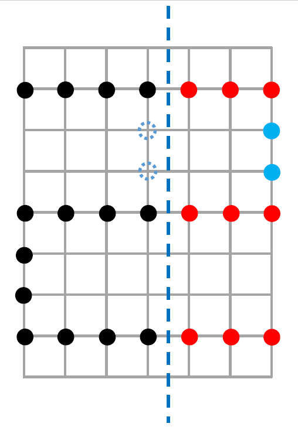 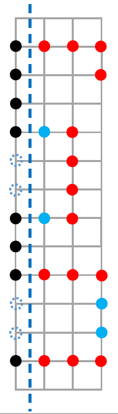 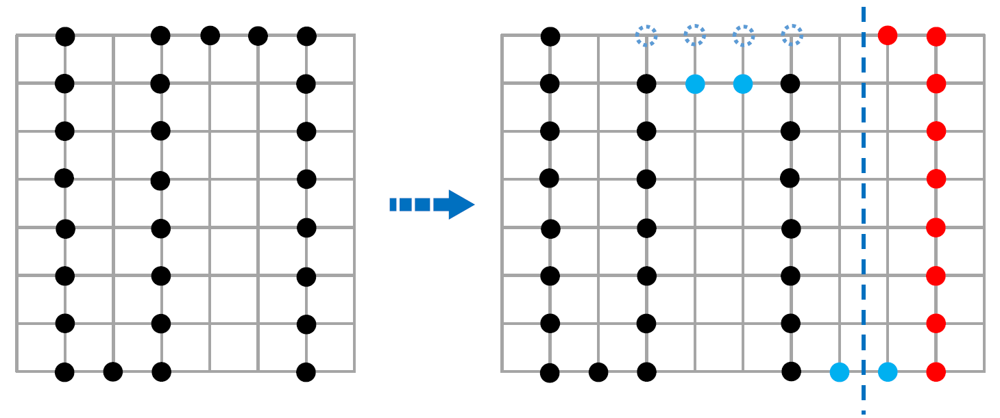 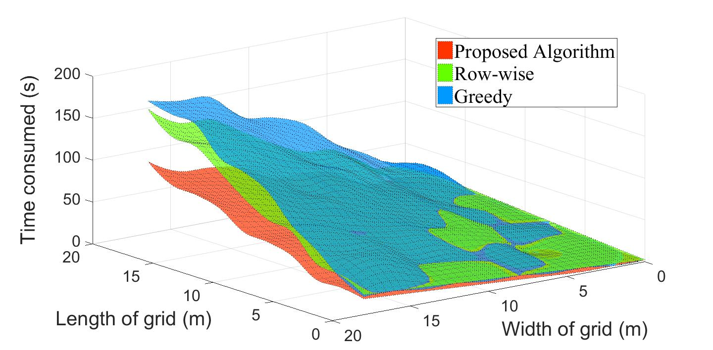We study the trajectory planning problem for optimizing the UAV's flight route in 3D space for mobile sensing. Unlike conventional stop-selection-first strategy, we take a different approach by finding the optimal path first and then selecting the measurement locations, using the dominating sets in graph theory.
We establish a multi-layer 3D network model that are formed by multiple 2D networks. We then extend the concept of dominating set in graph theory to define the dominating path, and formulate the problem as a combination of the minimum dominating path problem and the constrained minimum dominating set problem.
We theoretically analyzed and proved the mathematical expression of optimal shortest dominating path for the multi-layer 2D grid, which determines the lower bound of the shortest path. The shortest dominating path is related to the length (mod 3) and width (mod 3) of the grid, and has limited forms. Our proposed algorithm can save 32% less time than existing approaches to complete sensing the given space; during the battery life, it can cover 19% more sensing scope than existing solutions.
Related works have been submitted to IEEE INFOCOM 2018.
Realtime Profiling of Fine-Grained 3D AQI Distribution using UAV Sensing
Time: Dec. 2016 - Jun. 2017
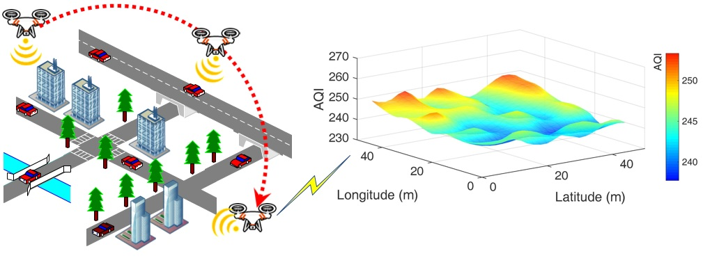 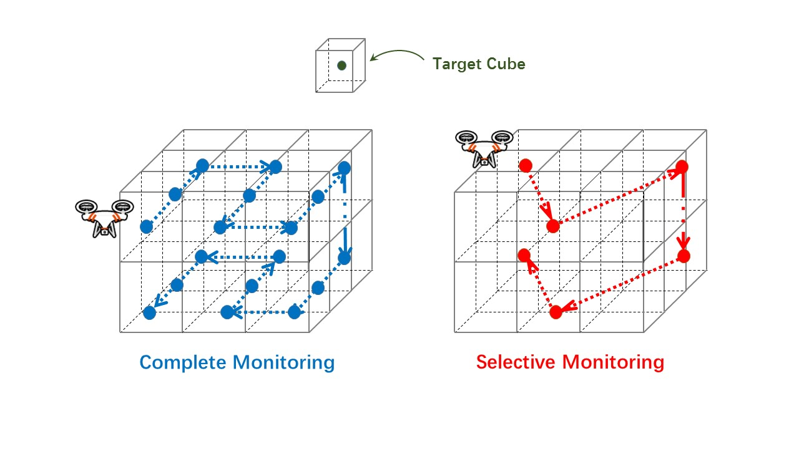
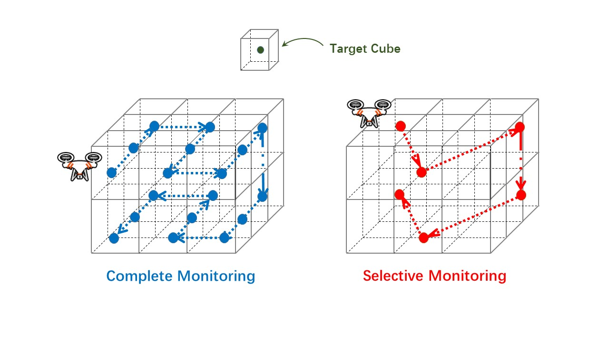
Air Quality index (AQI) monitoring is crucial for public health. Unlike traditional coarse-grained 2D AQI map built by static sensors, we design a mobile sensing system based on UAV to construct realtime 3D AQI map. We also focus on the fine-grained AQI distribution, as the AQI value has intrinsic changes in fine-grained area. We propose a novel distribution model that consists of a linear part using Gaussian Plume model (GPM), and a non-linear part using artificial neural networks (ANN), to realize the precisely prediction of AQI in a given fine-grained area. We used the data we collected to train the models, and its accuracy has been proved to outperform other existing models.
Intuitively, a larger number of measurement locations introduces a higher accuracy of the AQI map. However, based on the physical characteristic of the proposed model, we can build a sufficiently accurate AQI map by regularly measuring only a few locations. This process can effectively save the energy, and thus improve the efficiency of the system. Hence, we design the adaptive monitoring algorithms for UAV realtime measurement, named as complete monitoring and selective monitoring. Also, an objective function is formed to choose a sub-optimal way for the UAV trajectory planning over the monitoring process. Experimental results have shown our mechanism can effectively reduce the power consumption of whole system.
Related has been accepted by IEEE GLOBECOM 2017, and submitted to IEEE Internet of Things Journal.
Outdoor 3D Spectrum Map Reconstruction via UAV Sensing
Time: Aug. 2016 - Dec. 2016
 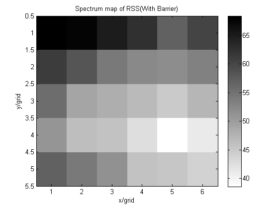
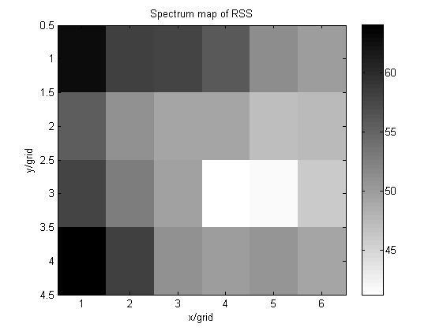
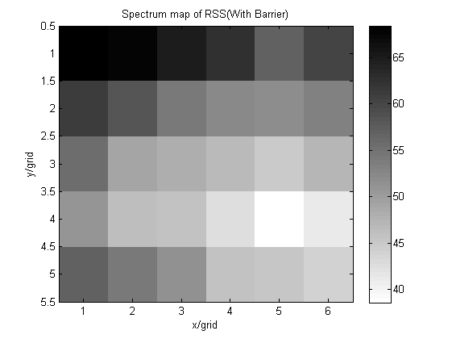
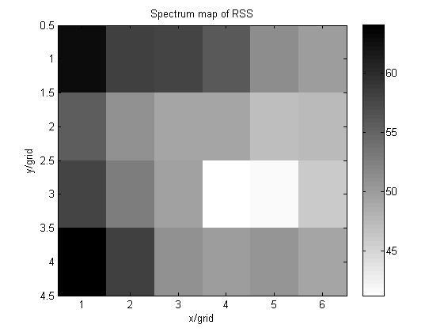
We study the 3D Wi-Fi (or cellular) spectrum map reconstruction in outdoor complex environment. We first assemble two UAVs with separated modules, adjust their PID parameters by debugging motors’ outputs (simulations by SITL on Linux), and realize stable flying and loitering.
We divide outdoor complex space into several cubes with regular shape (may not have the same size), using an Android smartphone boarded on the UAV to sense the Wi-Fi intensity (RSS) of each cube. Between equal time intervals, the UAV randomly passes through the whole area and detect possible dramatic changes, using random walking model via Markov chain. The area that has large changes in RSS would be marked as “suspicious” area, which would be measured again in the update period. Our proposed mechanism for controlling the UAV is collaborated to be robust in 3D space over complex urban area